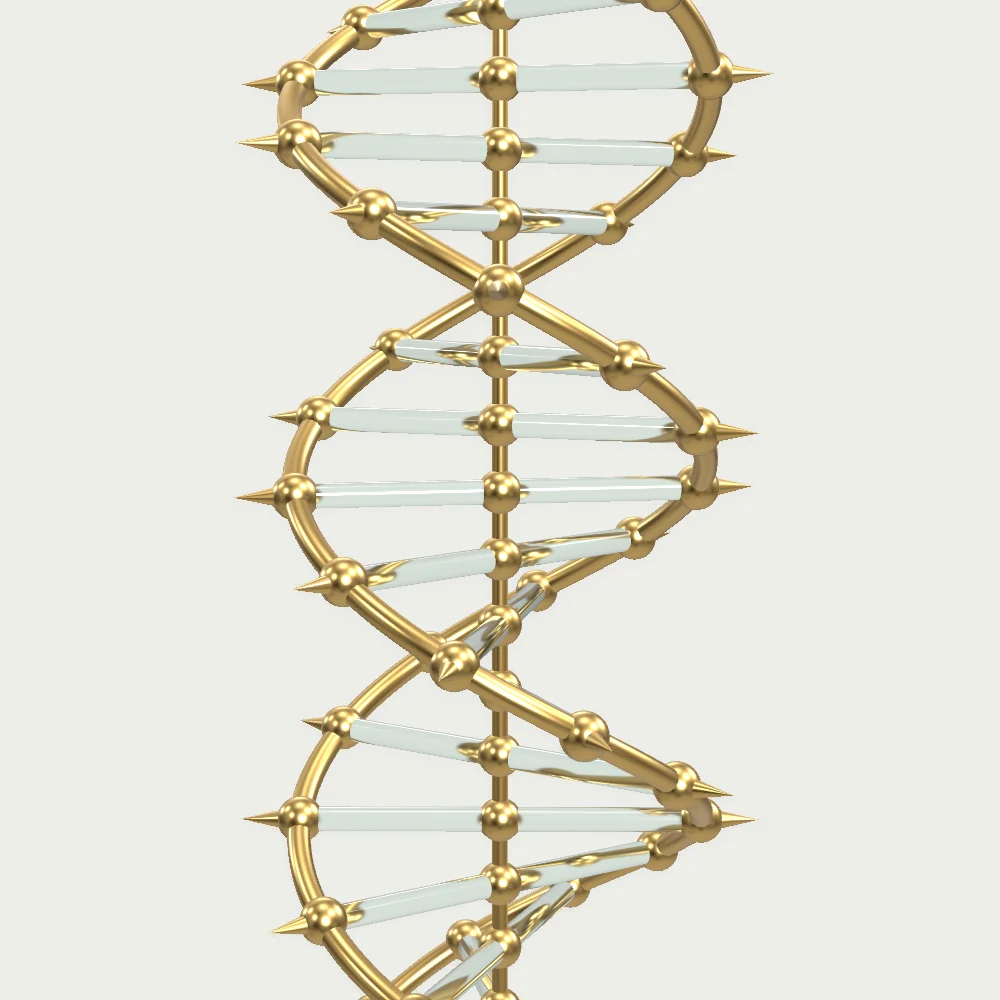
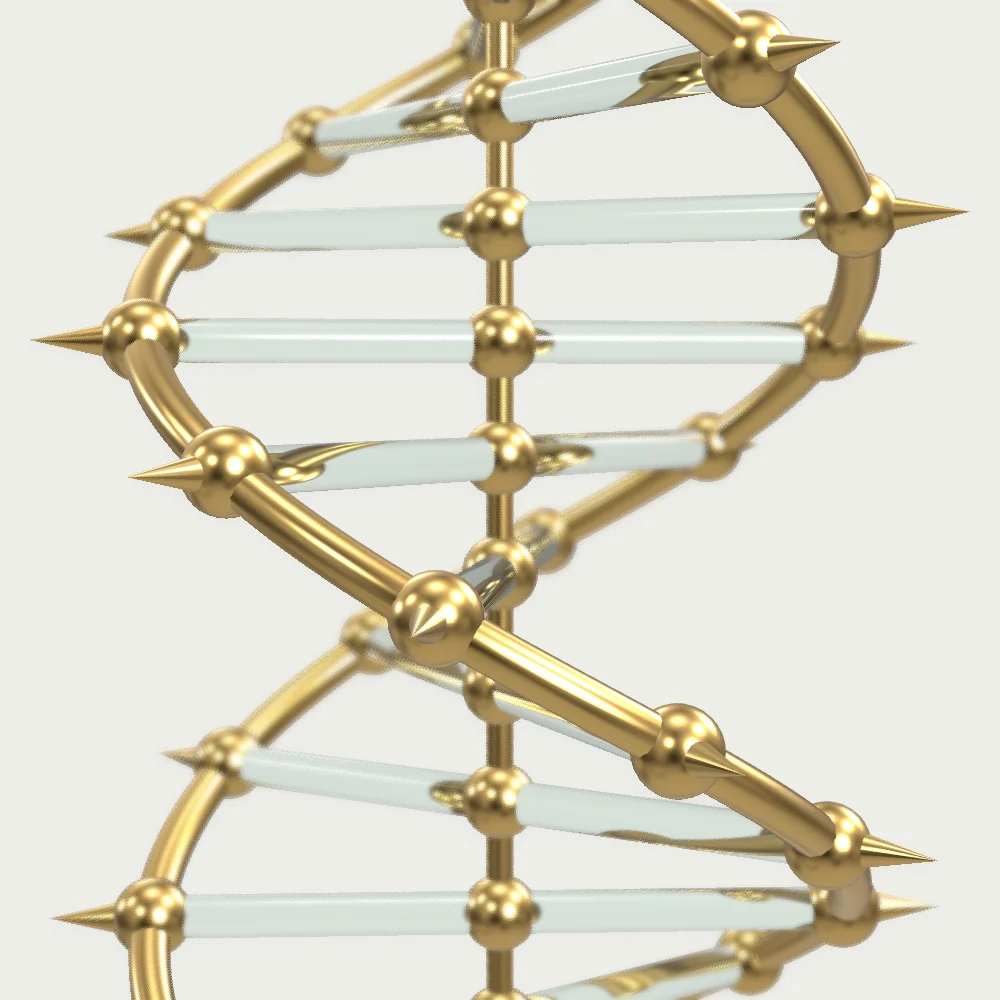
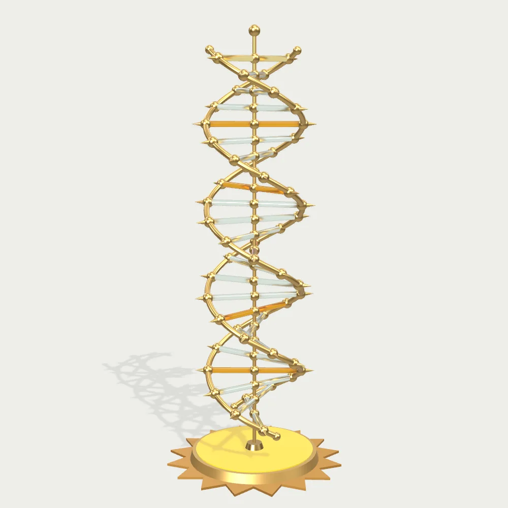

Innovate • Diagnose • Transform Lives
Genetic tests that work beyond the specialised laboratory.
Lightening Lives is an innovation-driven healthcare technology company in Hyderabad. We develop REASSURED genetic tests for inherited disorders, so molecular diagnosis can reach everyone, including underserved communities.
For hospitals, laboratories and public health programmes. We supply institutions only.
Scroll to see the model from every side
Designed the other way round.
Genetic tests have traditionally needed large equipment, specialised laboratories and trained staff, so they rarely reach the people who need them most. We start from where the test has to work.
- Sample
- A dried blood spot: a few drops of blood on a card
- Preparation
- No separate DNA extraction step
- Laboratory
- Minimal infrastructure, no large equipment
- People
- No specialised training to collect, process or read

Tests for five groups of inherited conditions, so far.
Each was developed for use in national health programmes. LitLife™-SCA, our flagship test for sickle cell anaemia, is validated by ICMR. This is our current range, not its limit.
- Sickle cell anaemia
- Thalassaemia
- Spinal muscular atrophy
- Duchenne muscular dystrophy
- Blood coagulation disorders

Made for programmes that screen at population scale.
Our tests were developed for Government of India health programmes, including the National Sickle Cell Anaemia Elimination Mission. Alongside them we run awareness and counselling programmes, mostly on behalf of the government.
The same model, seen from directly above: the sun in our logo.
Explore a partnership